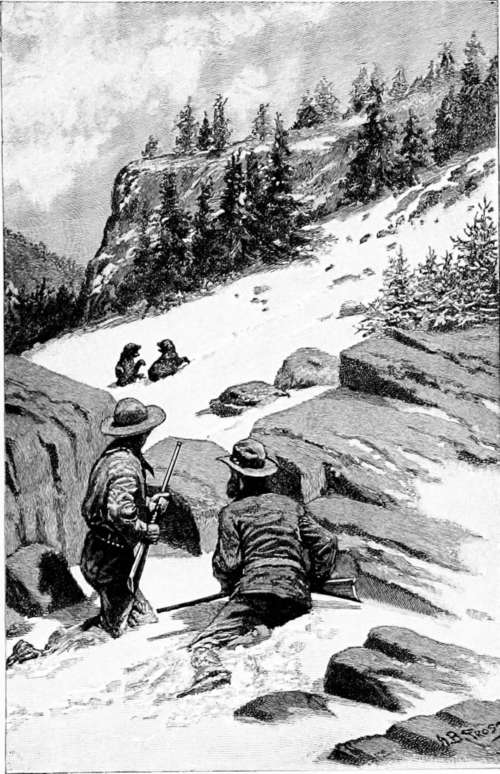

Hunting American Big Game. Part 3
Description
This section is from the book "Hunting", by Archibald Rogers. Also available from Amazon: Hunting.
Hunting American Big Game. Part 3
I was much interested once in watching a band of eight rams, all of them old fellows. They would feed early in the morning, and then betake themselves to a large rock which stood on a grassy slope, where they would play for hours. One of them would jump on the rock, and challenge the others to butt him off. Two or three would then jump up, and their horns would come together with a clash that I could hear from my position, which was fully a quarter of a mile away. On one occasion I saw them suddenly stop their play, and each ram became fixed; there the little band stood as though carved out of stone. They remained that way for quite half an hour without a movement. I could not detect with the glasses the slightest motion, when, presently, three strange rams made their appearance. Here was the explanation that I was looking for. They had seen them long before I had. The three visitors were not very well received, but were compelled to beat an ignominious and hasty retreat.
As summer draws near, and the winter snow begins to disappear, bands of elk may be seen migrating toward their favorite ranges. The bulls are now together in bands of greater or less extent. Their horns are well grown out, but are soft, and in the velvet. The cows and calves stick closely to the thick timber. As the season advances, and the flies become troublesome, the bulls will get up as high as they can climb, and seem to delight in standing on the brink of some mountain precipice. I have often wondered, in seeing them standing thus, whether they were insensible to the magnificent scenery that surrounded them.
Reader, what would you have given to see, as I have, a band of two hundred and fifty bull-elk all collected together on a beautiful piece of green grassy turf at an elevation of nine thousand feet? Here was a sight to make a man's nerves tingle! This was the largest band of bulls, by actual count, that I have ever seen; though my cousin and partner once saw in the fall of the year, including bulls, cows, and calves, fifteen hundred. This was on the memorable occasion when the only elk ever killed by any of my men gave up his life: and we have all concluded that this particular elk was frightened to death; for though three men shot at him, and each was confident he hit him, they always asserted afterward that no bullet-mark could be found on him.
Generally, in August, in each band of bulls there will be found one or two barren cows; about the end of August, after the bulls have rubbed the velvet off their antlers, they will come back to the vicinity of the bands of cows. I have seen bulls as late as Sept. 4 peaceably feeding or resting among the bands of cows. Usually, in a band of fifty cows there would be three or four males, including, possibly, one or two spike-bulls.* I have seen these spike-bulls in the velvet as late as Sept. 4, though by that time the older bulls had mostly rubbed the velvet off. A little later, about Sept. 7, the bulls begin to challenge each other, — in hunting parlance, whistling. This, on a clear, frosty night, is sometimes extremely melodious, and it is one of the most impossible sounds to imitate. Hunting elk, if I may be pardoned for saying it, I do not consider very exciting sport to a man thoroughly versed in the woods. They are far too noble an animal to kill unnecessarily; and if one hunts them in September, when they are whistling, it is a very easy matter, guided by the sound, to stalk them successfully.
Elk, like the rest of the deer family, are excessively fond of saline matter. Their trails may be seen leading from every direction to the great alkaline licks that abound in certain parts of their mountain ranges. Among other favorite resorts are springs, which make on steep wooded slopes a delightful boggy wallowing-place. The bulls revel in these from August to the middle of September. It is not an uncommon thing to kill them just as they emerge from their viscous bath coated with mud. The elk has a great deal of natural curiosity, and I have seen instances of it to an extraordinary degree where they have been but little hunted or alarmed. My friend Phillips of Washington, who was with me, will vouch for the veracity of this story, which I give as an example. We were wandering along the top of the mountain, some nine thousand feet up, trying to stalk some elk, not to shoot them, but to photograph them. We jumped a small band of bulls numbering about sixteen. They trotted slowly off, stopping to look back frequently, until all but two large bulls had disappeared. These walked slowly back to within fifty yards of where we were standing, and stopped, facing us.
* A spike-bull is a young elk carrying his first or dag antlers. These are single-tined, though in rare instances they are bifurcated.
It was truly one of the most charming sights one could have wished for, to have those graceful, sleek creatures almost close enough to caress. Presently, with a defiant snort, and with a succession of short barks, they would move away and come back again, repeating these manoeuvres over and over again, until we got tired of trying to look like a brace of marble posts, and sat down. We thought this would frighten them, but it did not; and once I thought they were going to proceed from curiosity to more offensive operations, so close did they come to us. Even my caterwauling, as my friend unfeelingly characterized my attempt to imitate their challenges, did not seem to alarm them; and not until a full half-hour had elapsed did this pair of worthies jog off.
The two Rascals on the Snowdrift
Elk are vigorous fighters; and while it seems but seldom that their combats terminate fatally, the broken points of their antlers, and their scarred and bruised bodies, bear testimony to the severity of their encounters. A full-grown elk stands about sixteen hands high, is about eight feet two inches long from nose to tip of tail, and with a girth around the chest of about six feet.
Continue to: